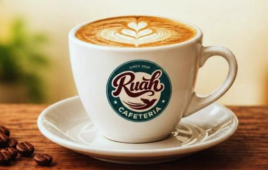
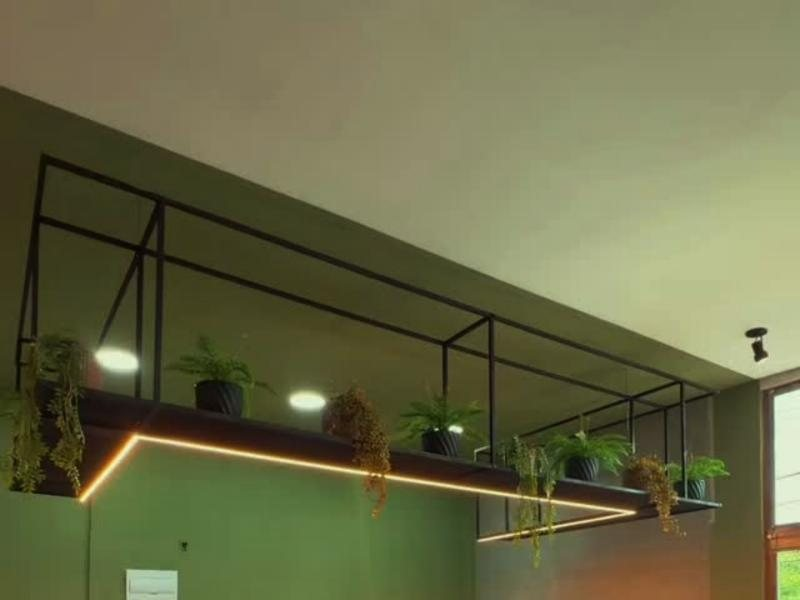
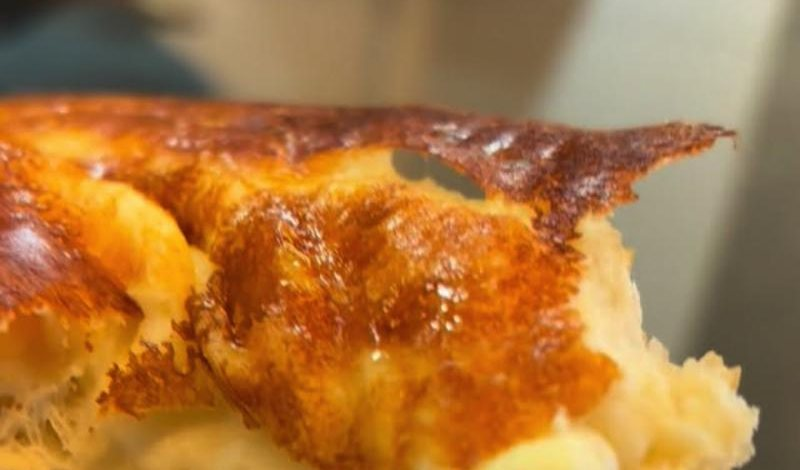

Café passado na hora, pão quentinho saindo do forno e um cantinho pra desacelerar. A Ruah fica no anexo da Igreja Casa Viva, em São José do Rio Preto.

Do espresso curtinho ao pão com requeijão gratinado. Escolha uma categoria e passeie pelos itens.

Terça a domingodesde as 8h
Ruah é uma palavra hebraica que quer dizer sopro, fôlego, espírito. Foi daí que veio a ideia: um lugar pra recuperar o fôlego entre um compromisso e outro, com um café bem feito na mão.
A cafeteria nasceu em 2026, no anexo da Igreja Casa Viva Rio Preto, e abre as portas pra todo mundo — de quem chega pro culto a quem só está passando pela rua.
O café mais gostoso (e abençoado) da cidade!— Casa Viva Rio Preto, no dia da inauguração
Pão com requeijão gratinado: casquinha dourada por cima, requeijão derretendo por dentro. Aquela pedida clássica pra quando bate uma fominha no meio da manhã.
Vem provar
No anexo da Igreja Casa Viva Rio Preto
São José do Rio Preto — SP